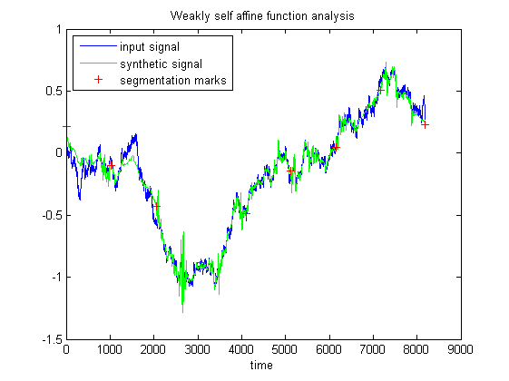
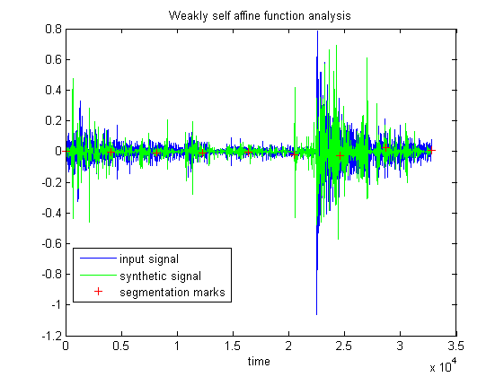

| FRACLAB Functions |
|
Computes a model of a 1D signal. This model is a Weakly Self-Affine function i.e. a function which has a weak form of scale invariance. Based on this model, a segmentation of the original signal is then proposed.
F = wsamod(x,QMF)
F = wsamod(...,'Propertyname',Propertyvalue)
[F,count] = wsamod(...);
F = wsamod(x,QMF) Computes the WSA model, F, of the input signal, x, using a quadrature mirror filter QMF. The size of the signal x must be a power of 2.
|
A figure is displayed plotting the input signal x (in blue), the synthetic signal F (in green) and the segmentation marks (as red crosses) |
WGP = wsamod(...,'Propertyname',Propertyvalue) Computes the WSA model, F, applying the specified property settings. The property setting can be choosen from the list below :
| Property | Purpose |
|---|---|
| 'scale' |
The synthetic signal F is computed using a specific scale depth parameter, S, which is a positive
integer strictly greater than 2 and smaller than log2(N)-1.
The parameter S tunes the number of scales in the input signal x which are taken into
account in the WSA modelling. Scales larger than S are ignored. |
| 'threshold' |
The synthetic signal F is computed using a specific maximum error, ERR, which is a positive real.
The parameter ERR tunes the maximum pointwise discrepancy allowed between the input signal x and the model.
If discrepancies larger than ERR occur, the signal is segmented to reduce this error. |
| 'limits' |
The synthetic signal F is computed using specific lower and upper scaling coefficients for the WSA model.
These values are positive reals and the upper value can be greater than 1 but the continuity of F is no longer guaranteed in this case.
Coefficients which are large or close to 0 tend to produce large variations,
and should most of the time be ignored in the modelling. |
[F,count] = wsamod(...) Computes the WSA model F and returns, at the same time, the percentage of scaling coefficients which have been processed, count, based on the [lower,upper] couple. Tighter limits yield better behaved models, but at the price of a larger percentage of non-processed (ignored) coefficients.
N = 8192; H = 0.5;
x = fbmwoodchan(N,H);
QMF = MakeQMF('daubechies',4);
y = wsamod(x,QMF);

images_loc = which('wsamod.html');
x = textread(fullfile(fileparts(images_loc),'images_examples','Segmentation','satdrum.dat'));
QMF = MakeQMF('daubechies',4);
y = wsamod(x,QMF);
sound(x,44000);pause(.5);sound(y,44000);

| |
waveshrink2d | Functions -- Alphabetical List | |